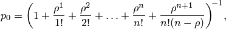
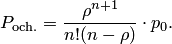
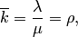
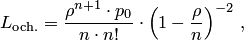
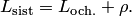

Расчет показателей
Данный вид Системы Массового обслуживания можно охарактеризовать, как: Одноканальная СМО с неограниченной очередью.
Такой вид СМО можно представить в виде графа
Расчитывать оптимальное количество оборудования и рекламы будем по следующим формулам:
Вероятность того, в системе отсутствуют заявки, по формуле 
Вероятность того, что заявка окажется в очереди 
среднее число занятых каналов 
среднее число заявок в очереди 
среднее число заявок в системе 